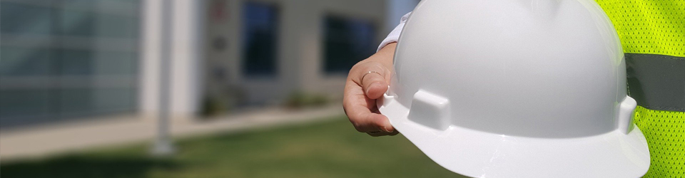

지속가능경영
윤리경영
공정하고 투명한 기업경영으로
세계 초일류기업을 지향한다.
- 첫째
- 우리는 고객만족을 최우선의 가치로 삼고,
신뢰와 존중을 바탕으로 공동의 번영을 추구한다.
- 둘째
- 우리는 모든 지역과 국가의 문화와 관습을 존중하며
법규를 준수하고 공정하게 경쟁한다.
- 셋째
- 우리는 자율과 책임, 창의와 도전정신을 중시하고
삼성중공업인의 명예와 품위를 지킨다.
- 넷째
- 우리는 정직과 성실로써 최선을 다하여
상대방을 존중하고 건전한 조직문화를 창출한다.
안전경영
안전이 경영의 제1 원칙이다.
 안전경영의 배경수많은 설비와 자재가 투입되는 선박 건조와 해양설비 제작 과정에는 사고의 위험이 항상 존재합니다. 심각한 인적·물적 손해를 유발하는 산업재해는 회사의 손실뿐만 아니라 개인과 가정의 손실로 이어질 수 있습니다.
안전경영의 접근방법안전한 작업장에서 완벽한 품질과 높은 생산성이 발현된다는 확신 아래 모든 작업공정에서 안전을 최우선 가치로 설정하고 있습니다. 안전은 아무리 강조해도 지나치지 않은‘절대 가치’입니다.
안전경영의 추진방향삼성중공업은 안전경영을 고유문화로 정착시키기 위해 전사적 차원에서 노력하고 있습니다.
나눔경영
희망을 나누고 사랑을 실천
이웃과 사회가 더불어 행복한 세상
삼성중공업은 지난 1995년 사회봉사단을 발족한 이래로 나눔과 상생의 경영철학을 바탕으로 소외된 이웃과 함께하는 사회봉사활동을 활발히 펼쳐나가고 있습니다.
준법경영
기업의 사회적 책임이 기업경영의 키워드로 부상하고, 전 세계적으로 공정경쟁, 부패방지, 환경보호 등에 대한 규제가 엄격해지고 있습니다.
삼성중공업 준법경영 관련 제보- 이메일
- cp.shi@samsung.com
- 전화
- +82-31-5171-7755
- 주소
- 경기도 성남시 분당구 판교로 227번길 23
- 삼성중공업 판교 R&D센터 준법지원팀
지속가능경영 보고서
지속가능한 성장과 발전을 추구하는
삼성중공업의 성과를 확인하실 수 있습니다.
- SHI's VALUE CREATION
- 회사 소개, 건조 및 인도 현황 등의 일반 현황과
UN 지속가능발전목표 연계, 중대성 평가 내용을 담았습니다.
- SUSTAINABLE BUSINESS
- Value Chain 단계별 지속가능경영 활동을 소개하고,
해당 활동의 19년 성과 및 관리 방법을 담았습니다.
- SUSTAINABILITY PERFORMANCES
- 주요 지속가능경영 활동을 소개하고, 해당
활동의 19년 성과 및 관리 방법을 담았습니다.
- APPENDIX
- 감사보고서, GRI Index, 온실가스배출량 검증
성명서 등의 부가 정보를 제공합니다.